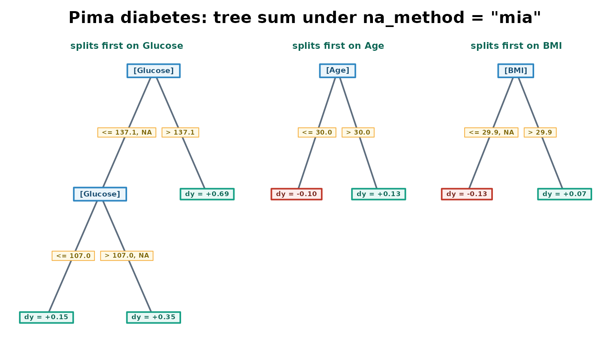

The introductory vignette (vignette("figsr-intro"))
covers na_method = "mia" in a few lines on a small
synthetic case, where missingness is built to be the entire signal. This
vignette goes deeper on a real one: the Pima Indians Diabetes Database,
where missingness is informative but modest, and mixed in with
everything else a tree can learn.
The Pima Indians Diabetes Database
pima_diabetes ships with figsr; loading the
package makes it available, the same way iris is available
after library(datasets). It is 768 patient records with
eight clinical predictors and a binary outcome (diabetes within five
years), one of the most-used data sets on Kaggle
(kaggle.com/datasets/uciml/pima-indians-diabetes-database),
originally distributed through the UCI Machine Learning Repository.
str(pima_diabetes)
#> 'data.frame': 768 obs. of 9 variables:
#> $ Pregnancies : int 6 1 8 1 0 5 3 10 2 8 ...
#> $ Glucose : int 148 85 183 89 137 116 78 115 197 125 ...
#> $ BloodPressure : int 72 66 64 66 40 74 50 NA 70 96 ...
#> $ SkinThickness : int 35 29 NA 23 35 NA 32 NA 45 NA ...
#> $ Insulin : int NA NA NA 94 168 NA 88 NA 543 NA ...
#> $ BMI : num 33.6 26.6 23.3 28.1 43.1 25.6 31 35.3 30.5 NA ...
#> $ DiabetesPedigreeFunction: num 0.627 0.351 0.672 0.167 2.288 ...
#> $ Age : int 50 31 32 21 33 30 26 29 53 54 ...
#> $ Outcome : Factor w/ 2 levels "no","yes": 2 1 2 1 2 1 2 1 2 2 ...Five columns record measurements that cannot physiologically be zero:
glucose, blood pressure, skin thickness, insulin and BMI. In the raw
data a 0 in any of them is a missing value recorded as if
it were data – a well-documented quirk of this particular data set, not
a figsr concern. That recoding has already been done in
pima_diabetes; see ?pima_diabetes for the
exact preprocessing.
predictors_with_gaps <- c("Glucose", "BloodPressure", "SkinThickness", "Insulin", "BMI")
missing_rate <- vapply(pima_diabetes[predictors_with_gaps], function(x) mean(is.na(x)), numeric(1))
knitr::kable(
data.frame(predictor = names(missing_rate),
missing_pct = sprintf("%.1f%%", 100 * missing_rate)),
row.names = FALSE
)| predictor | missing_pct |
|---|---|
| Glucose | 0.7% |
| BloodPressure | 4.6% |
| SkinThickness | 29.6% |
| Insulin | 48.7% |
| BMI | 1.4% |
Insulin is missing in nearly half the records, and skin thickness in
almost a third. Only 51% of the rows are complete on all five columns at
once – na_method = "omit", the default, would fit on barely
half the data and would be unable to predict for most new patients
either.
Fitting with and without na_method = "mia"
set.seed(42)
train_idx <- sample(nrow(pima_diabetes), floor(0.75 * nrow(pima_diabetes)))
train <- pima_diabetes[train_idx, ]
test <- pima_diabetes[-train_idx, ]
fit_omit <- figs(Outcome ~ ., data = train, max_splits = 10, mode = "classification")
fit_mia <- figs(Outcome ~ ., data = train, max_splits = 10, mode = "classification",
na_method = "mia")
cat("training rows used, omit:", length(fit_omit$fitted_values), "of", nrow(train), "\n")
#> training rows used, omit: 292 of 576
cat("training rows used, mia :", length(fit_mia$fitted_values), "of", nrow(train), "\n")
#> training rows used, mia : 576 of 576
test_complete <- complete.cases(test[, predictors_with_gaps])
cat("test patients omit can score at all:", sum(test_complete), "of", nrow(test), "\n")
#> test patients omit can score at all: 100 of 192
cat("test patients mia can score :", nrow(test), "of", nrow(test), "\n")
#> test patients mia can score : 192 of 192na_method = "mia" fits on every training row and scores
every test patient, including the ones with an incomplete workup.
na_method = "omit" (the default) trains on about half the
data and, at prediction time, raises an error for a patient missing a
predictor the tree actually split on – it can only be scored on the
subset of test patients who happen to have every measurement. This is
the practical cost of the default: it is not that it predicts worse, it
is that it often cannot predict at all.
Coverage, not just accuracy
accuracy <- function(predicted, observed) mean(predicted == observed)
pred_omit <- predict(fit_omit, test[test_complete, ], type = "class")$.pred_class
pred_mia <- predict(fit_mia, test, type = "class")$.pred_class
cat("accuracy, omit, on the", sum(test_complete), "patients it can score:",
round(accuracy(pred_omit, test$Outcome[test_complete]), 3), "\n")
#> accuracy, omit, on the 100 patients it can score: 0.81
cat("accuracy, mia, on those same", sum(test_complete), "patients :",
round(accuracy(pred_mia[test_complete], test$Outcome[test_complete]), 3), "\n")
#> accuracy, mia, on those same 100 patients : 0.84
cat("accuracy, mia, on all", nrow(test), "test patients :",
round(accuracy(pred_mia, test$Outcome), 3), "\n")
#> accuracy, mia, on all 192 test patients : 0.797On the subset both models can score, accuracy is close either way –
with a single train/test split of 100-odd patients that difference is
well within sampling noise, and mia is not being sold here
as more accurate on data it was never asked to handle in the first
place. The real result is coverage: mia scores every
patient in the test set, omit scores only those with a
complete workup.
Reading the tree sum
summary(fit_mia)
#> ========================================================
#> FIGS Model Summary: Tree Sum Decision Rules
#> ========================================================
#>
#> Leaf values are contributions to P(y = "yes"); they sum across trees.
#>
#> --- Tree 1 ---
#> |-- IF Glucose <= 137.138 OR Glucose IS MISSING
#> | |-- IF Glucose <= 106.998
#> | | `-- Leaf Value: +0.1466
#> | `-- IF Glucose > 106.998 OR Glucose IS MISSING
#> | |-- IF DiabetesPedigreeFunction <= 0.938
#> | | |-- IF SkinThickness <= 27.000
#> | | | `-- Leaf Value: +0.1875
#> | | `-- IF SkinThickness > 27.000 OR SkinThickness IS MISSING
#> | | `-- Leaf Value: +0.3850
#> | `-- IF DiabetesPedigreeFunction > 0.938
#> | `-- Leaf Value: +0.6426
#> `-- IF Glucose > 137.138
#> |-- IF Glucose <= 155.000
#> | |-- IF BloodPressure <= 87.000
#> | | `-- Leaf Value: +0.4339
#> | `-- IF BloodPressure > 87.000 OR BloodPressure IS MISSING
#> | `-- Leaf Value: +0.8349
#> `-- IF Glucose > 155.000
#> `-- Leaf Value: +0.7211
#>
#> --- Tree 2 ---
#> |-- IF Age <= 30.000
#> | `-- Leaf Value: -0.0998
#> `-- IF Age > 30.000
#> |-- IF Age <= 62.400
#> | |-- IF Glucose <= 85.000
#> | | `-- Leaf Value: -0.1635
#> | `-- IF Glucose > 85.000 OR Glucose IS MISSING
#> | `-- Leaf Value: +0.1418
#> `-- IF Age > 62.400
#> `-- Leaf Value: -0.3204
#>
#> --- Tree 3 ---
#> |-- IF BMI <= 29.932 OR BMI IS MISSING
#> | `-- Leaf Value: -0.1260
#> `-- IF BMI > 29.932
#> `-- Leaf Value: +0.0740
figsr_importance(fit_mia)
#> # A tibble: 8 × 3
#> feature gain importance
#> <chr> <dbl> <dbl>
#> 1 Glucose 31.1 61.1
#> 2 Age 9.66 19.0
#> 3 BMI 5.37 10.5
#> 4 DiabetesPedigreeFunction 1.62 3.18
#> 5 SkinThickness 1.60 3.13
#> 6 BloodPressure 1.56 3.07
#> 7 Pregnancies 0 0
#> 8 Insulin 0 0Glucose, BMI, SkinThickness
and BloodPressure each pick up an
OR ... IS MISSING clause somewhere in the sum: the tree
folds those missing values into whichever side of a split fits best,
rather than splitting on missingness alone the way the introductory
vignette’s toy example does. Insulin – missing in nearly
half the records, more than any other column here – carries no
importance at all in this fit: Glucose, Age
and BMI already explain most of the outcome, and the greedy
search never needs it. This is the ordinary case for real data:
missingness is one signal among several, not the whole story, and a tree
that is free to use it will use it exactly as much as it helps, on
whichever columns it helps, and no more.
Visualizing the tree sum
plot() draws the tree sum with base R graphics. A leaf’s
color follows the sign of its contribution – green for positive, red for
negative – and main and tree_names label the
figure and each tree. A shorter fit reads better as a picture than the
ten-split model above:
fit_plot <- figs(Outcome ~ ., data = train, max_splits = 4, mode = "classification",
na_method = "mia")
root_features <- vapply(fit_plot$trees, function(tr) tr[[1]]$feature, character(1))
plot(fit_plot, main = "Pima diabetes: tree sum under na_method = \"mia\"",
tree_names = paste0("splits first on ", root_features))
Green leaves push the prediction toward a diabetes diagnosis, red
leaves push away from one, and a ", NA" tag on an edge
marks the side a missing value of that predictor takes.
When to impute instead
figsr does not impute. If a predictor is missing because
of a process you want to model away rather than learn from – a sensor
dropout, a scanning error – an imputation step such as
recipes::step_impute_knn() inside a tidymodels
workflow is a better fit than na_method = "mia". Use
"mia" when the fact that a value is missing might itself be
informative, as it plausibly is here.
References
Smith, J. W., Everhart, J. E., Dickson, W. C., Knowler, W. C., and Johannes, R. S. (1988). Using the ADAP learning algorithm to forecast the onset of diabetes mellitus. Proceedings of the Symposium on Computer Applications and Medical Care, 261-265.
Twala, B. E. T. H., Jones, M. C., and Hand, D. J. (2008). Good methods for coping with missing data in decision trees. Pattern Recognition Letters, 29(7), 950-956.